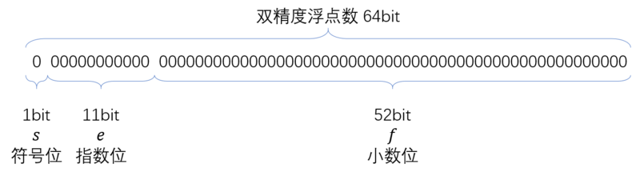
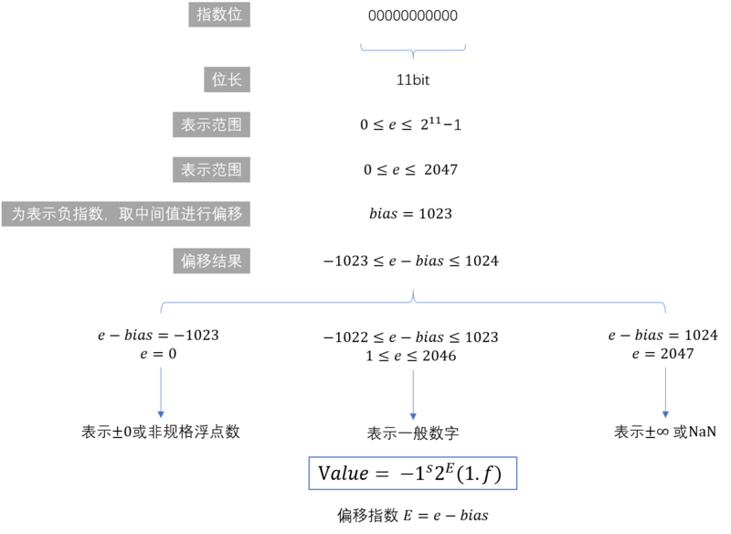
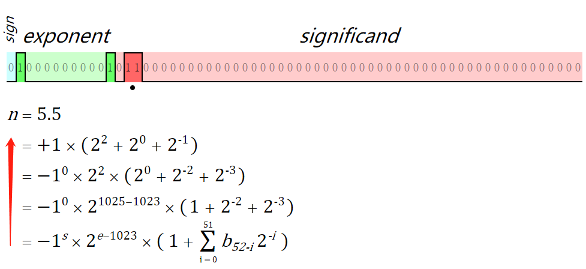
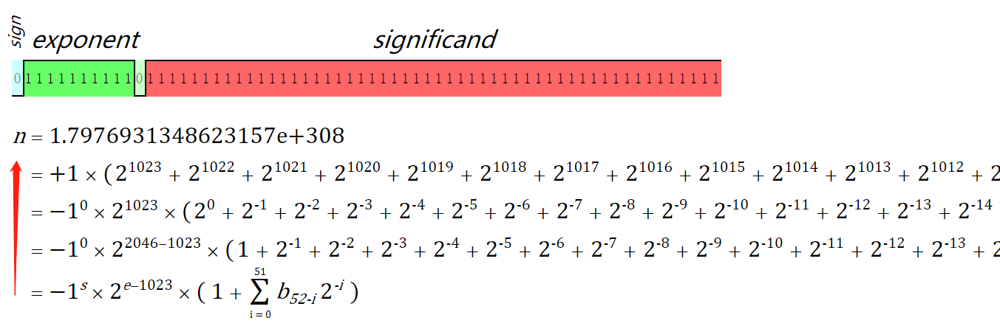
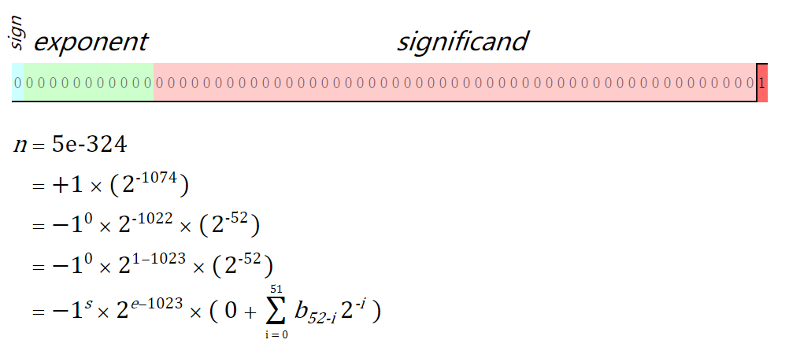
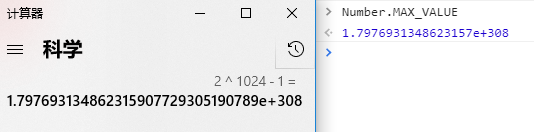
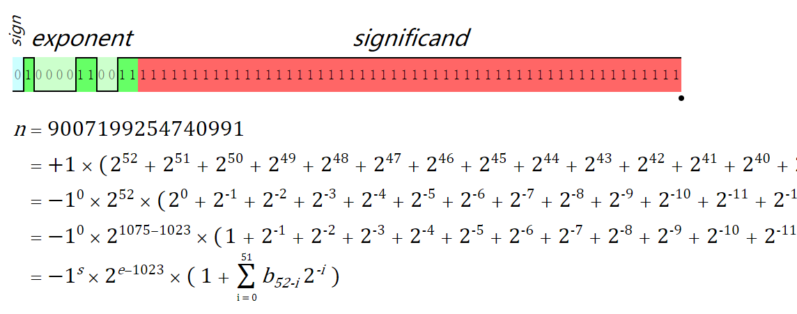
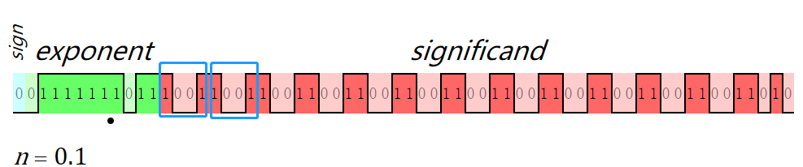
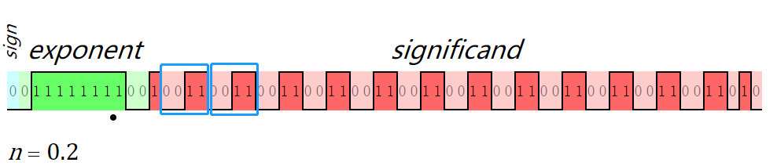

JavaScript中的Number与精度
概述
我们先思考如下问题：
- 为什么0.1+0.2 != 0.3？
- 为什么会有Number.MAX_VALUE和Number.MAX_SAFE_INTEGER这两个常量同时存在？
JavaScript的数字都是number类型的，不管是整数还是浮点数都以IEEE754标准中的双精度（64位）的格式存储在计算机中的。那为了找到上述问题的答案，我们就必须先从这个规则开始。
IEEE754下的存储
IEEE754标准下存储示意如下：

- s表示符号位，当s=0，V为正数；当s=1，V为负数。
- e表示指数位
- f表示小数位

在 64 位的二进制中，符号位决定了一个数的正负，指数部分决定了数值的大小，小数部分决定了数值的精度
以5.5为例，其在IEEE754标准下的存储示意如下（IEEE 754标准在线可视化）：

我们来一步一步做下拆解：
5.5 转二进制 ==> 101.1 采用科学计数法 ==> 1.011*2^2
按照IEEE 754标准存入计算机：
符号位：0
指数位：2 加1023 ==> 1025 转二进制 ==> 10000000001
尾数位：1.011 隐去小数点左边的1 ==> 011
小数部分转成二进制需要乘2取整，具体参考此文。指数位的计算按照上图公式：E表示实际偏移指数，e为存储值，64精度下的基准固定值为1023，所以e的值为2+1023；浮点数存储是52位尾数位。
最大/最小正值：Number.MAX_VALUE && Number.MIN_VALUE
因为指数部分e的范围是 [0,2047]（2048表示Infinity），E的范围为[-1022,1023]
当符号位为0、指数取到1023、小数位全为1时，为可表示的最大正值

当符号位为0、指数取到-1022、小数位初最后一位全为0时，为可表示的最小正值

最大正值为 2^1024-1，转换为科学计数保存在Number.MAX_VALUE下：

最大/最小安全整数：Number.MAX_SAFE_INTEGER && Number.MIN_SAFE_INTEGER
为什么JS还存在一个最大安全整数Number.MAX_SAFE_INTEGER（注意说的是整数），
上面已经说过小数点可存储的位数共52位，实际偏移指数如果超过这个值就无法准确记录（上图中计算器计算的2^1024 与 Number.MAX_VALUE是不等的），所以实际偏移指数最多为52，将52个小数点部分也全部填为1，指数部分E为52，e=1023+52=1075

上述结果为： 2^53-1=9007199254740991，转换符号则得到最小安全数：-2^53-1=-9007199254740991
对于超过这个范围的整数，JavaScript 依旧可以进行运算，但却不保证运算结果的精度。
对于最大安全数字也可以这样理解：
双精度存储下，有效数字总是 1.xx…xx 的形式，其中 xx..xx 的部分保存在 64 位浮点数之中，最长为52位。隐藏位固定是1，所以，JavaScript 提供的有效数字最长为53个二进制位，53个二进制位全部为1时就等于：2^53-1=9007199254740991
0.1+0.2 != 0.3
讲到此处估计已经明白为什么会这样了，一切其实都是IEEE 754标准下的双精度长度问题，对于有些小数，转换成二进制时是无线循环的：


存储时因为精度有限会进行一些0 舍 1 入情况，故二者就不会完全相等。
位运算
JavaScript 将数字存储为 64 位浮点数，但所有按位运算都以 32 位二进制数执行。在执行位运算之前，JavaScript 将数字转换为 32 位有符号整数。
执行按位操作后，结果将转换回 64 位 JavaScript 数。
位运算包含：
- 按位或（|）
- 按位与（&）
- 按位非（~）
- 按位异或（^）
- 左移（<<）
- 有符号右移（>>）
- 无符号右移（>>>）
下面介绍几种位运算的妙用
按位与（&）判断奇偶
由于偶数的最低位是0，奇数的最低位是1，所以可以使用&运算符可以判断一个数的奇偶
num & 1 === 1 ? '奇数' : '偶数'
按位非（~）判断值是否大于-1
执行非运算时 ~x = -(x+1)，只要x=-1的时候~x才会为0：
if(~arr.indexof(item)) {
// TODO
}
按位异或（^）判断相等与值交换
1.任意一个变量X与其自身进行异或运算，结果为0，即X^X=0
2.任意一个变量X与0进行异或运算，结果不变，即X^0=X
3.异或运算具有可结合性，即a^b^c=（a^b）^c=a^（b^c）
4.异或运算具有可交换性，即a^b=b^a
所以，可以用位异或来判断两个数值是否相等：
Math.pow(2,3)^8 //0 表示二者相等
也可以将两个数据做交换：
a = a ^ b;
b = a ^ b;
a = a ^ b;
具体原理参考：异或运算实现两个数的交换
取整
由于0与任何数相或，都不会改变原数，而位运算会将数字转为整数，故：
5.65 | 0 // 5
两次按位非（~~），原理基本相同：
~~5.65 //5
左移（<<）与有符号右移（>>）也会将数字转为整数
5.65 << 0 //5
5.65 >> 0 //5